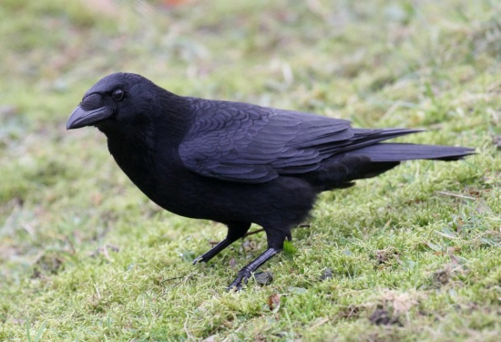

The all-black carrion crow is one of the cleverest, most adaptable of our birds.
It is often quite fearless, although it can be wary of man. They are fairly solitary,
usually found alone or in pairs, although they may form occasional flocks.
While at first appearance its plumage is black, on closer inspection it has a green
and purple iridescence.
Carrion crows will come to gardens for food and although often cautious initially,
they soon learn when it is safe, and will return repeatedly to take advantage of
whatever is on offer.
Carrion Crows have a diverse diet: worms, insects, fruit, seeds, kitchen scraps, eggs, carrion and young birds.
Woodland Farmland Grassland Heathland Upland Urban and suburban Wetland.
Carrion crows are found almost everywhere, from the centre of cities to upland moorlands, and from woodlands to seashore.
Carrion Crows can be seen all year round.